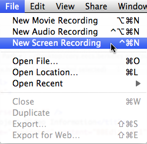
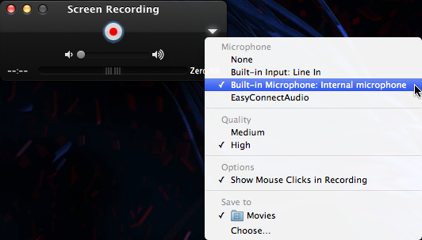
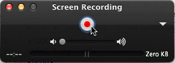
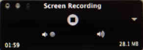
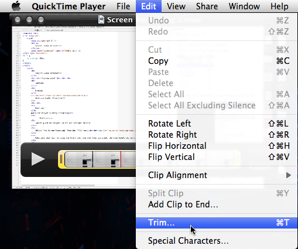
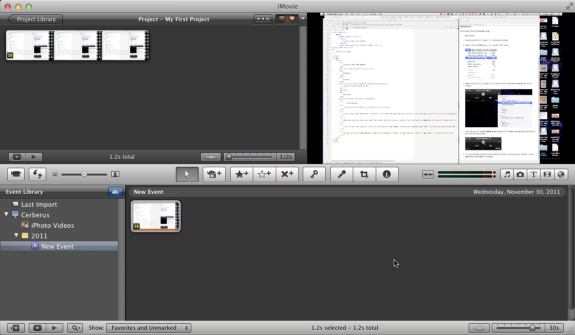

Project Video Information
You should begin by introducing yourself and then show a 5 minute (Max) walkthrow of your project.
If you are unable to show yourself via webcam, please bring up a picture on the computer of you and
your partners during the recording so that we can see who you are.
Software
Windows
Camtasia Studio (free trial)
QuickTime Player (already installed)
Instructions
-
Launch QuickTime Player (in the Applications folder)
-
Select "New Screen Recording" from the "File" menu:

-
Make sure that you are using the correct audio input (usually built-in), and that when you speak, the line levels change (the grey bars under the Big Red Button grow and shrink):

-
Click the big red "record" button in the middle of the window, record your presentation, then click the stop button:

-
You can trim the resulting movie (which, by default, is saved in your "Movies" folder) right there in the QuickTime Player:

-
If you are comfortable using it, you can use iMovie (also installed) to edit your movie (such as removing portions, etc.):

-
Upload your movie to YouTube directly (they
support the QuickTime movie format
)